One app for the whole lending chain: a federation funds credit societies, societies lend to their members, and every rupee repaid finds its way back, split and reconciled to the paisa.
● Apex federation · lends at 9.5%● Credit society · lends at 11.5%● Member · repays monthly
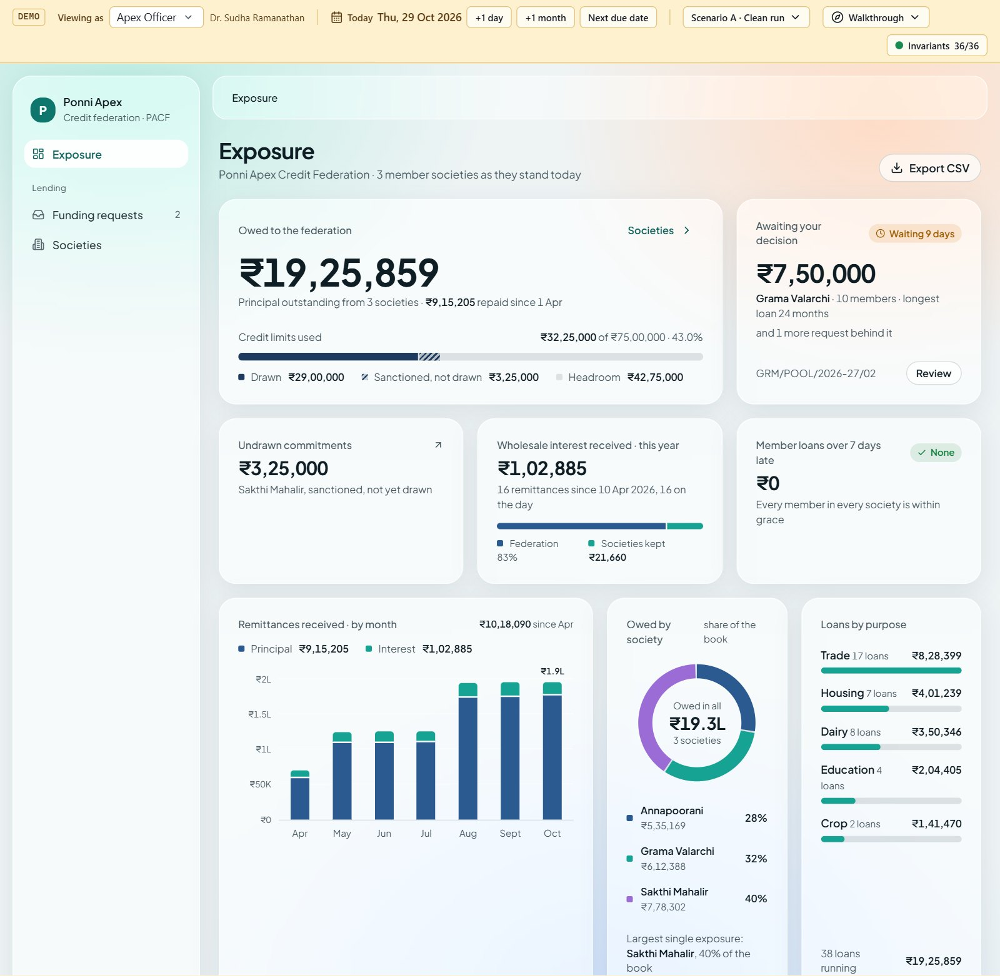
The demo opens on the federation’s view, shown above. Switch to any other role from the demo bar at the top of every screen.
Ponni Apex Credit Federation · Tamil Nadu1
TTiered MicrofinanceHow it works
How it works
Three tiers, one book
The federation lends wholesale to a society; the society lends retail to its members. The society keeps the 2% between the two rates and carries the work of collecting.
Ponni Apex
Credit federation
9.5%
wholesale tranches
sanctions a poolremits monthly
Credit society
Annapoorani, Grama Valarchi, Sakthi Mahalir
2%
spread it keeps
pays out a loanpays each EMI
Member
Madurai, Thanjavur, Dindigul
11.5%
retail loan
9.5% to the federation2% society
How each rupee of a member’s 11.5% interest divides
Who uses it
Role
Person in the demo
What they do
Apex officer
Dr. Sudha Ramanathan
Watches exposure across societies, reviews pools, sanctions or declines funding.
Secretary
Meenakshi Sundaram
Runs the society: decides large loans, builds pools, draws down, pays out, remits, reads the books.
Loan officer
Karthik Rajan
Takes and appraises applications, approves up to ₹50,000, records collections.
Member
Veerappan Pandian
Applies for a loan, follows it step by step, sees the schedule and what is due.
Auditor
R. N. Subramanian
Sees every society screen, changes nothing.
Rules the app keeps for you
✓Whole rupees. Instalments are whole rupees; amounts on screen round half up. The books keep every paisa.
✓Fair repayment. Loan repayments stay under 50% of monthly income; no prepayment fee, as RBI directs.
✓Grace, then penal. 7 days of grace, then 2% a year penal interest on what is overdue.
✓Books that balance. 36 live checks run after every action; the demo bar shows them green.
Tiered Microfinance · User guide2
TTiered MicrofinanceGetting around
Getting around
The demo bar drives everything
The amber strip at the top is not part of the product: it lets you play every role, move time and load prepared stories.
Control
What it does
Viewing as
Switch role. Each role sees only its own screens and can do only what it is allowed to.
Society
For society roles, choose whose books you are looking at.
Today · +1 day · +1 month · Next due date
Move the simulated clock. Instalments fall due, arrears and penal interest build, remittances come up.
Scenario
Load a prepared story: A, a clean run; B, members falling behind; C, prepayment and recovery.
Walkthrough
Guided tours. “A member’s loan, start to finish” takes you through the whole chain.
Invariants 36/36
Live checks that the books balance and every rule holds.
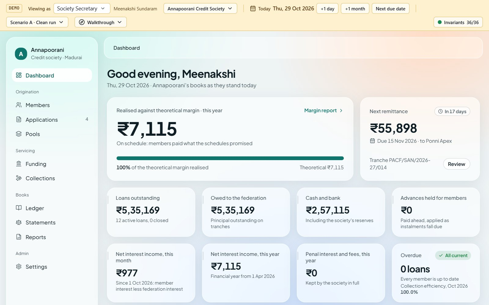
On a laptop. The sidebar lists the role’s screens; the top bar shows where you are. Every amount is a link to the entries behind it.
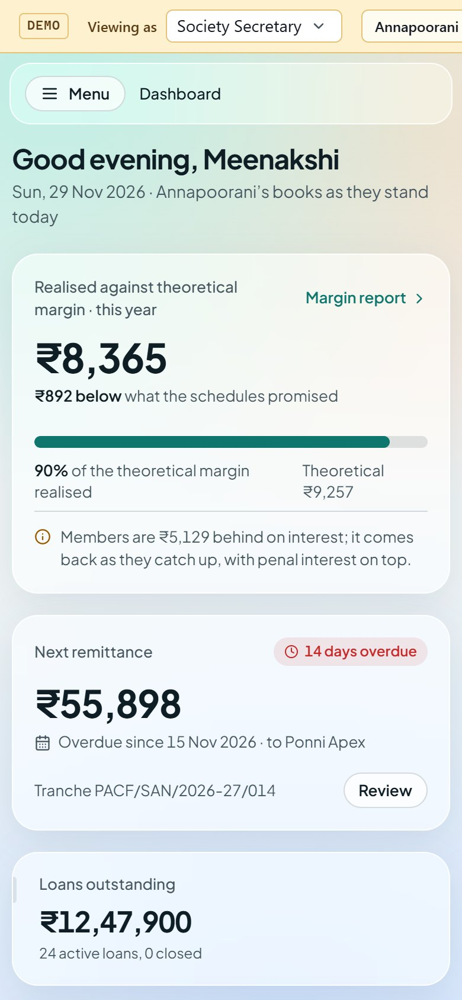
On a phone. Menu opens the sidebar; the demo bar scrolls sideways.
Tiered Microfinance · User guide3
TTiered MicrofinanceFor members
For members
Apply, follow, repay
A member applies on their own, sees the instalment before sending, and follows the application to the day it is paid out.
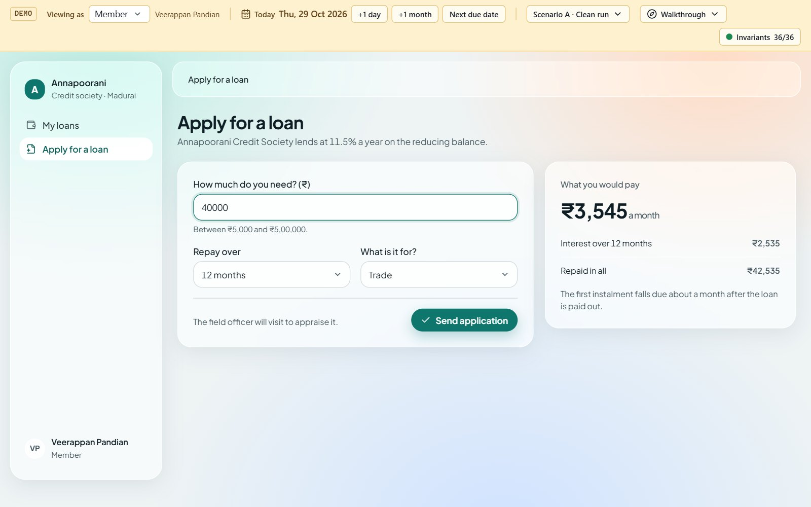
Apply for a loan. Type an amount (₹5,000 to ₹5,00,000), choose the months and the purpose; the monthly instalment appears as you type.
How to apply
Open Apply for a loan in the sidebar.
Enter the amount, how long to repay over and what it is for.
Check the monthly instalment and the total repaid.
Choose Send application. It goes straight to the field officer.
iA member can have one application in progress at a time, and only ever applies for themselves.
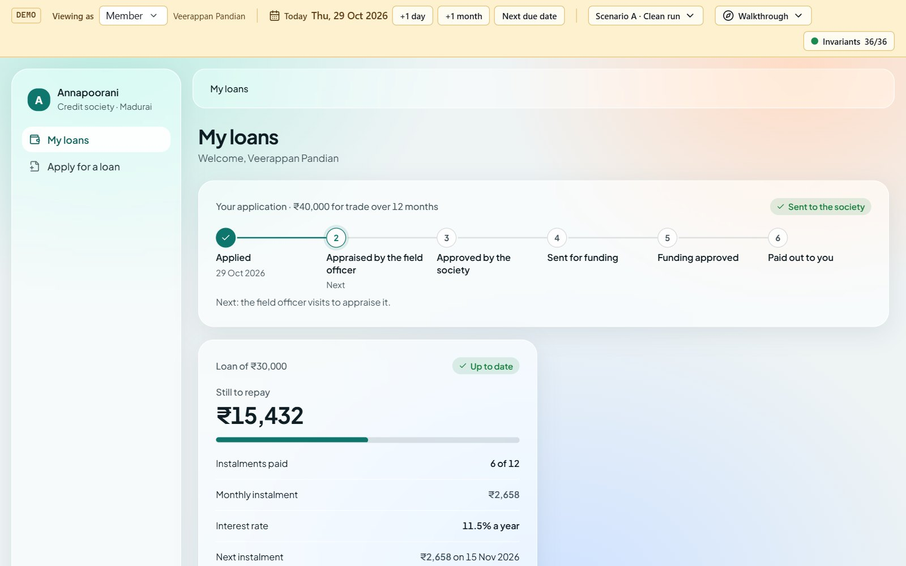
The tracker. Six steps from Applied to Paid out to you, each dated as it happens, with what comes next.
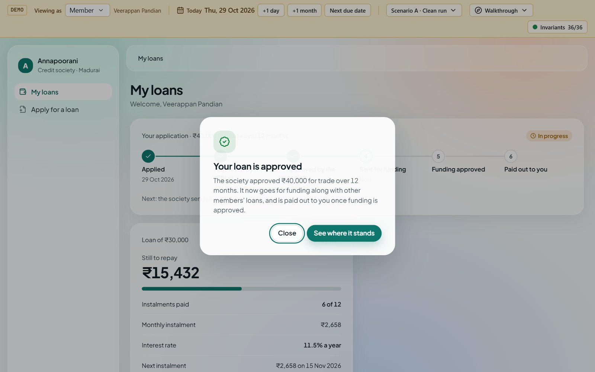
Pop-ups. The member is told when the society approves or turns it down, with the reason, and when the money is paid out.
Tiered Microfinance · User guide4
TTiered MicrofinanceFor the loan officer
For the loan officer
Appraise, decide, collect
The field officer hears of each new proposal at once, appraises it against the member’s income, and records what members pay.
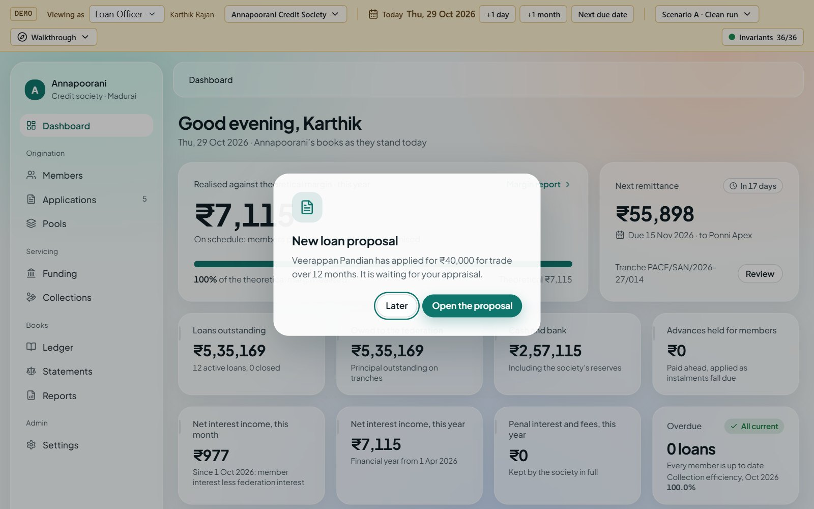
New loan proposal. When a member applies, the officer sees a pop-up; Open the proposal goes straight to it.
Appraisal and decision
Enter the member’s monthly income and other obligations.
The repayment burden shows against the 50% cap.
Record appraisal, with a recommended amount.
Up to ₹50,000 the officer approves or rejects; above that the secretary decides, and gets a pop-up.
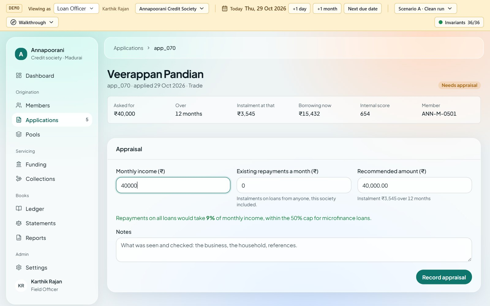
Appraisal. Income, obligations and the recommended amount, with the burden worked out as you type.
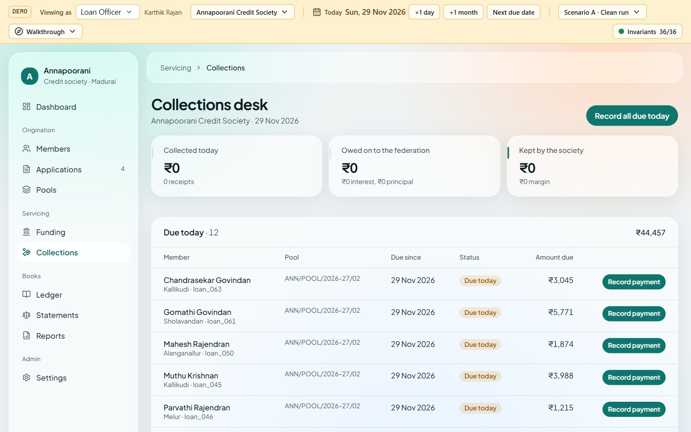
Collections desk. What is due today and overdue. Record all due today takes every instalment in one go; each payment shows the share owed on to the federation and the share the society keeps.
Tiered Microfinance · User guide5
TTiered MicrofinanceFor the society secretary
For the society secretary
Pool, fund, pay out
The secretary sees the society’s position at a glance, gathers approved loans into a pool for the federation, and pays members out once it is funded.
Dashboard. The margin realised against the 2% the schedules promise, the next remittance, the books, earnings and loans by days past due.
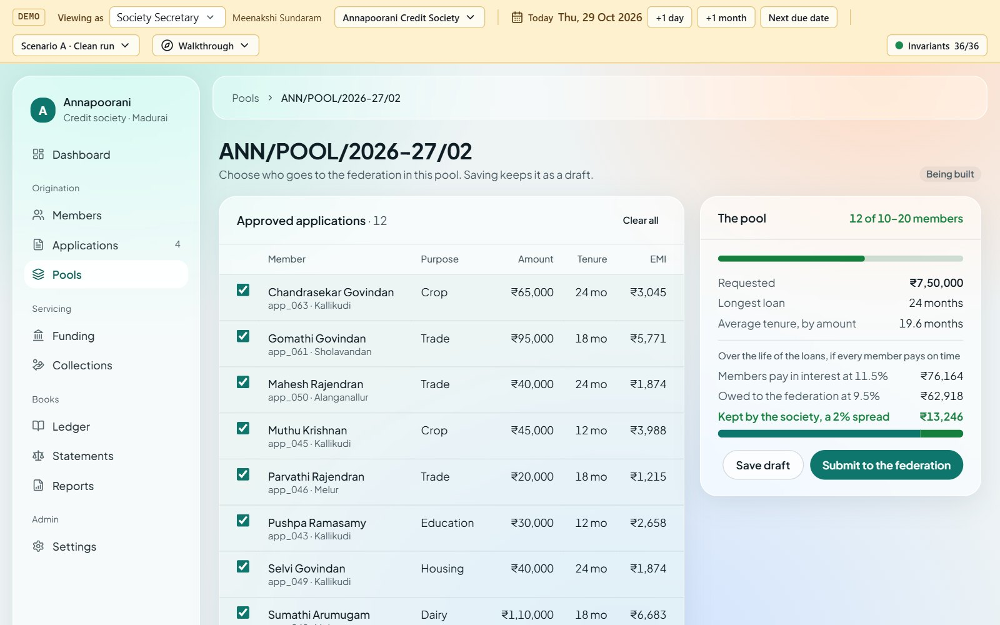
Pools. 10 to 20 approved loans go to the federation as one request; the cost, income and spread update as you add them. Then Submit to the federation.
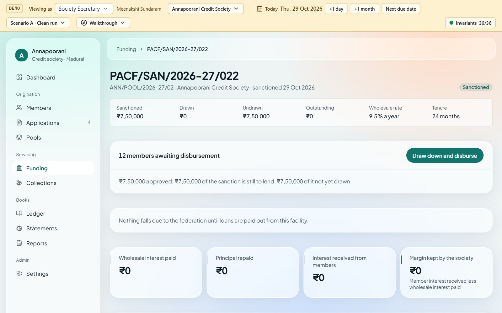
Funding. Once sanctioned, Draw down and disburse pays every member in the pool; each loan gets its schedule.
Tiered Microfinance · User guide6
TTiered MicrofinanceFor the society secretary
For the society secretary
Remit and read the books
Each month the society pays the federation its interest and the principal members repaid, then keeps the difference. Every figure traces to its journal entries.
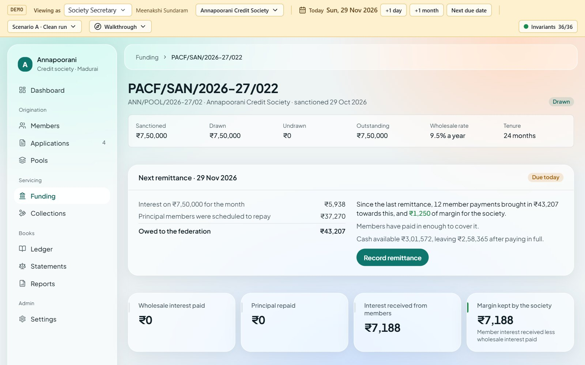
Remittance. What is owed to the federation this month, what members have paid towards it, and the margin earned. Record remittance pays it.
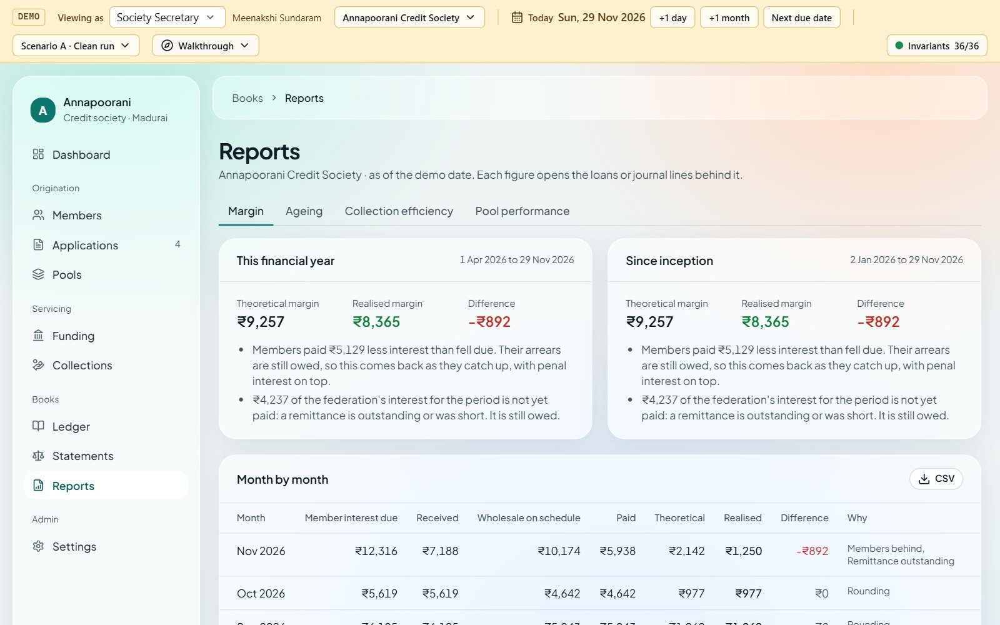
Reports. Margin analysis, ageing, pool performance and collection efficiency, each explained in words.
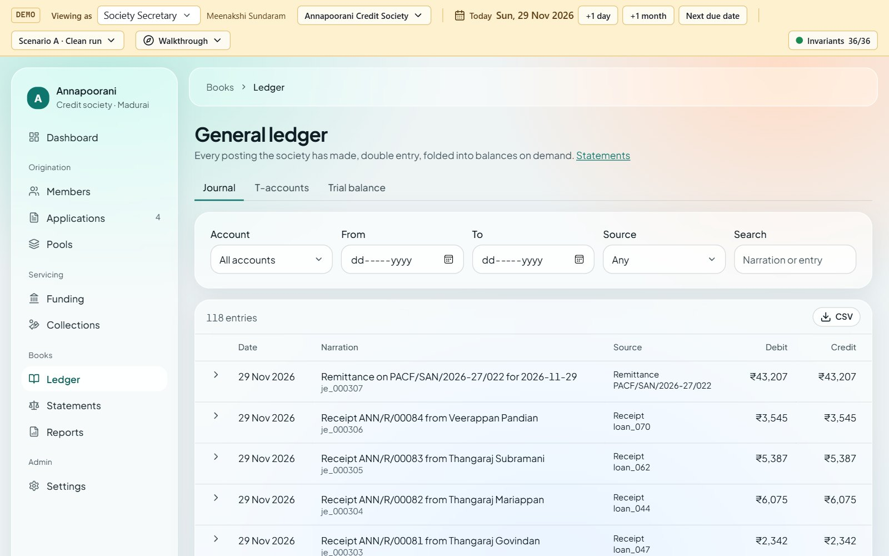
Ledger and statements. Double-entry journal, T-accounts, trial balance, income statement and balance sheet.
Tiered Microfinance · User guide7
TTiered MicrofinanceFor the federation
For the apex officer
See the risk, fund the pools
The federation sees what it is owed across every society, which pools wait for a decision, and how each society repays.
Exposure. Owed to the federation, credit limits used, the request waiting longest, and charts of remittances by month, who owes what and what members borrow for.
Read it in a minute
Owed by society: the largest single exposure, as a share of the book.
Remittances by month: principal and interest coming back.
Where the interest went: the federation’s 9.5% against the society’s 2%.
Societies: each limit, remittances on the day, members late, pools to review.
Review and sanction
Open the request from Funding requests and Begin review.
Check the society’s track record and what the money is for.
Set the amount (in full or 80%), the rate and tenure, then Sanction; or Decline with a reason.
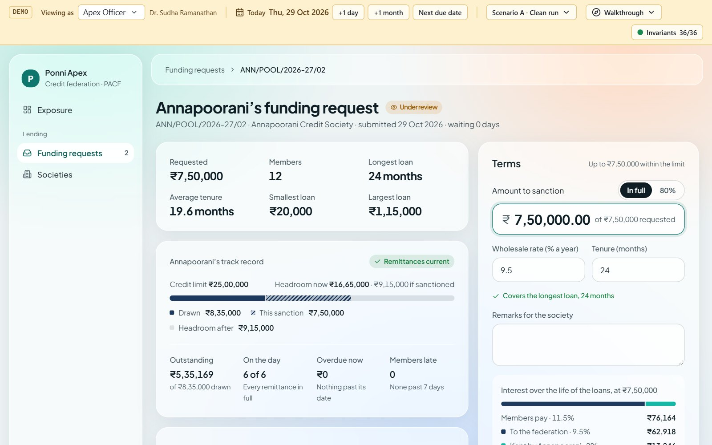
Review and sanction. The terms panel shows how the interest divides before you sanction; a short sanction asks the society to re-scope its pool.
Tiered Microfinance · User guide8
TTiered MicrofinanceA loan, start to finish
A loan, start to finish
Nine steps, four people
Every step updates every screen at once: the dashboards, the federation’s charts and the member’s tracker. Try it with Walkthrough → “A member’s loan, start to finish”.
Member applies
Amount, months, purpose; the instalment shows as they type.
Member
Officer is told
A pop-up: new loan proposal, opened in one click.
Loan officer
Appraise and approve
Income against the 50% cap; up to ₹50,000 the officer decides.
Loan officer
Member is told
A pop-up: approved, or not, with the reason.
Member
Pool and submit
10 to 20 approved loans go to the federation together.
Secretary
Federation sanctions
Review the track record, set terms, sanction at 9.5%.
Apex officer
Draw down and pay out
One drawdown, a disbursement and a schedule per member.
Secretary
Members repay
Each instalment splits: on to the federation, kept by the society.
Loan officer
Society remits
The federation’s share goes up; the society keeps its 2%.
Secretary
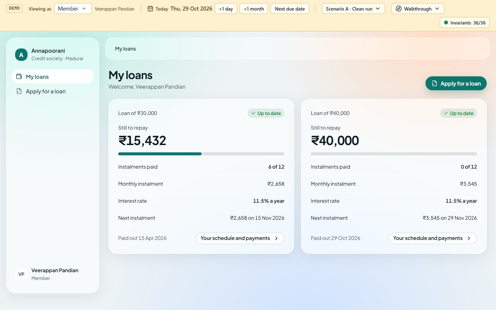
The end of the journey. The member sees the new loan beside the old one: what is left to repay, the whole-rupee instalment and the next due date.
Tiered Microfinance · User guide9
TTiered MicrofinanceHighlights
Why it stands out
Highlights
What makes Tiered Microfinance worth a federation’s, a society’s and a member’s time.
3 tiers
The whole chain in one app
Federation, society and member work from the same live books, so nobody re-keys a figure or waits for a month-end report.
₹1
Every rupee traced
Each instalment splits into what goes to the federation and what the society keeps. Every figure opens the journal lines behind it.
2%
Margin you can see
Societies see the spread the schedules promise against what they actually earn, and why the two differ.
36
Books that always balance
Thirty-six checks run after every action. If anything were to drift, the demo bar would say so at once.
6 steps
Members in the loop
Members apply on their own, follow each step and get a pop-up when it is approved and paid out. No more “any news?” visits.
1 glance
Risk for the federation
Exposure, concentration by society, remittance punctuality and members late, in charts the board can read.
RBI
Fair-lending rules built in
A 50% repayment cap, no prepayment fee, grace before penal interest and approval limits by role.
Mobile
Made for the field
A modern, light design that works as well on a field officer’s phone as on the secretary’s laptop.
From application to remittance, in one flow
Tiered Microfinance gives every tier the same truth at the same moment: faster loans for members, clearer margins for societies and real-time oversight for the federation.